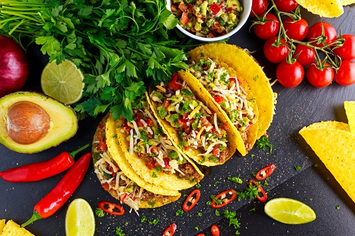
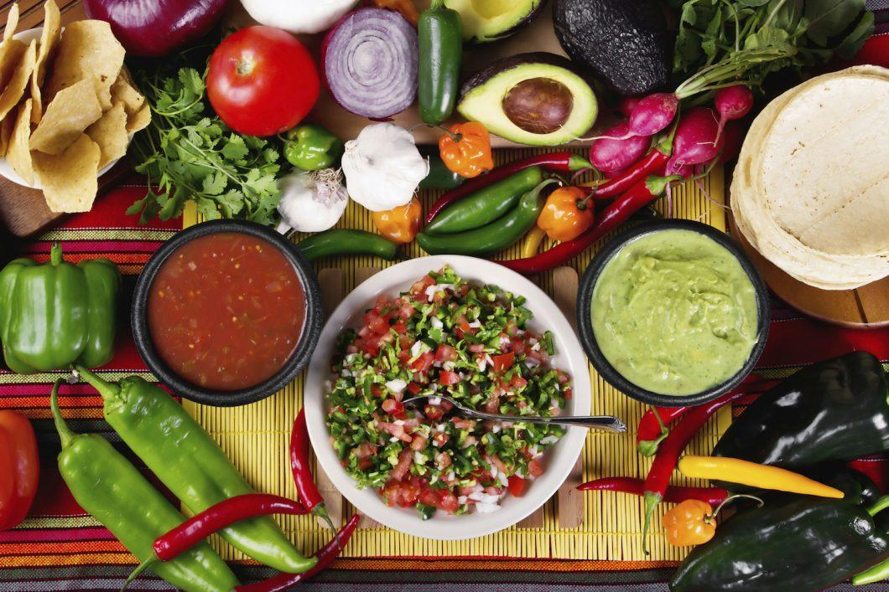
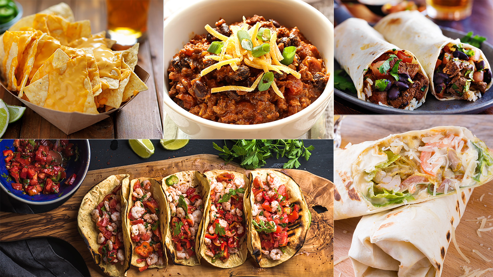

México es un país localizado en la parte meridional de América del Norte y está compuesto por una treintena de Estados. Entre las numerosas variedades de riquezas del país, la gastronomía mexicana es un punto importante que no se puede dejar a un lado.
El país es famoso por sus múltiples especialidades regionales, sus riquezas en refinamiento y finura, y sobre todo por la multitud de ingredientes utilizados como el maíz, las judías, el abocado, la calabaza, el tomate, las guindillas o la pava. Muchos de los platos de comida típica mexicana derivan también de recetas precolombinas.
Lo cierto es que México presume de una de las mejores y más ricas gastronomías de América. Es de hecho una de las cocinas más internacionales del mundo, al nivel de la italiana, la china o la japonesa, y raro es el país del mundo que no tiene restaurantes mexicanos en sus ciudades y pueblos. Ahí quedan recetas de fama mundial como los tacos, las quesadillas, las enchiladas o los burritos, aunque lo cierto es que estos no son más que la punta del iceberg de una gastronomía muchísimo más diversa.
Es importante insistir en las claras diferencias regionales cuando hablamos de comida típica mexicana. México es uno de los países más grandes del mundo y las variantes gastronómicas son notorias dependiendo de cada ciudad, provincia y región.

Cocina de México
La cocina mexicana se caracteriza de forma primordial por sabores intensos. Predominan mucho más los platos contundentes y potentes de sabor que no los livianos. Eso se aprecia tanto por las materias primas más habituales como por costumbres gastronómicas basadas en la fuerte condimentación o en el habitual uso del picante, por ejemplo.
Es por eso, por ejemplo, que en la cocina mexicana no nos será habitual ver una carne a la plancha. Por el contrario, será mucho más normal aderezarla de mil y una formas, acompañarla de según qué salsas, etc. También podemos destacar como rasgo característico de la comida mexicana su gran capacidad para el aprovechamiento y para la combinación de muchos productos. En este sentido, las combinaciones entre pan o toritas y carne, verduras, arroz, especias, etc., es de lo más normal, sobre todo en el día a día de la población.

En cuanto al ámbito nutricional, lo cierto es que la comida mexicana no está precisamente entre las más aconsejadas por sanitarios y dietistas, dando como resultado unos índices de sobrepeso bastante por encima de la media tanto en adultos como en niños. No debemos tampoco tergiversar estos datos, ya que son consecuencia no sólo del consumo de comida mexicana sino también internacional, siendo las pizzas o las hamburguesas dos de las cosas más consumidas en el país. Se trata más bien de la cultura gastronómica del país y no tanto de su comida autóctona.
De hecho, podemos poner muchos matices. Lo que conocemos por comida mexicana tradicional fuera de las fronteras de México, especialmente en Estados Unidos y Europa, no es para nada representativo de la comida normal del día a día en México. El abuso de aderezos y salsas, así como de las frituras y las harinas refinadas, sin olvidarnos de la presencia constante del queso, hace que comer en un restaurante mexicano no sea precisamente la mejor dieta.
¿Qué es lo que más se come en México?
Es evidente que un primer grupo de alimentos o productos muy consumidos en México lo conforman los tacos, las fajitas, las quesadillas, las enchiladas, etc. También podríamos hablar de burritos y nachos, aunque no dejan de ser grandes ejemplos de Tex-Mex, o lo que os lo mismo, comida mexicana exportada y adaptada al gusto internacional.

Es importante subrayar la predilección de los mexicanos por todo tipo de carnes. Recetas como el mole con pollo, la cochinita pibil, la tinga de res o de pollo, los tacos de cabeza de res o frijoles con lomo de cerdo son algunos ejemplos de la comida típica mexicana. En general el pollo y la res son las consumidas, aunque el cerdo también está bastante presente.
También hay que hablar de pescados, que aunque no sean tan habituales no significa que no formen parte del día a día de muchos mexicanos. El país norteamericano cuenta con muchísimos kilómetros de costa, y pescados como el atún o el salmón están muy bien valorados, así como otros que no nos son tan familiares como el huachinango. Mención aparte para los camarones, que constituyen un producto súper presente en un montón de recetas mexicanas, y no exclusivamente de pescados. De hecho, aunque los mariscos del Caribe no son los más apreciados del mundo, se pueden degustar en muchísimos puntos del país.
Y por supuesto, resulta indispensable hacer referencia al arroz como uno de los alimentos básicos de la dieta mexicana. No sólo es el acompañamiento habitual de muchos platos mexicanos, sino que también es el protagonista de algunas recetas como el clásico arroz a la mexicana, en cuya preparación no pueden faltar itomates, cebolla y ajo, además del acompañamiento con frijoles y/o guisantes.
En este sentido, la comida «casera» mexicana queda relegada a una posición muy baja en el consumo diario de los mexicanos. Y eso que tienen recetas de todos los colores, por ejemplo de sopas. Pocas veces habremosvisto una sopa en la carta de un restaurante mexicano, pero en muchas partes del país se cocinan caldos de gran calidad.
Comidas Típicas Mexicanas
Tacos
Enchiladas
Mole
Tamales
Pozole
Quesadillas
Aguachile
Bibliografia
Al despedirse dijo: Hasta nunca y cerró la puerta.
Un coche histórico debe tener, al menos, 25 años desde la primera matriculación.
Una página web puede ser consultada desde cualquier parte del mundo.